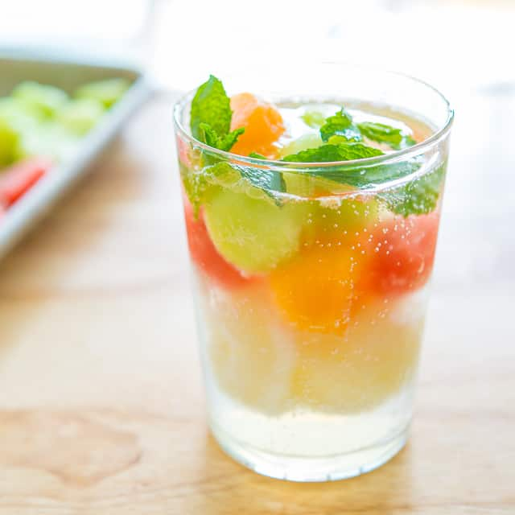

Summer Melon Sorbet Float
Ingredients:
Honeydew and cantaloupe
Lemon or coconut sorbet
Mint leaves
Seltzer or club soda
Steps:
Use a melon baller to scoop small balls of honeydew and cantaloupe.
Freeze on a parchment-lined baking sheet until firm, at least 4 hours. (You can transfer them to a resealable plastic bag and freeze up to 1 month.)
When ready to serve, place several melon balls in a tall glass with 1 or 2 scoops lemon or coconut sorbet (or one of each).
Rub a few mint leaves between your fingers and drop in. Top with seltzer or club soda, serve immediately.